虚拟内存¶
- 虚拟内存：将逻辑内存与物理内存分离，通过 paging 实现
Notice
虚拟内存远大于物理内存，本质上只是一组地址范围，并不能真正的存储数据，所有数据都存储在物理内存中！
虚拟内存的优点
- 执行时仅需将程序的一部分调入内存
- 逻辑地址空间可以远大于物理地址空间
- 允许更多程序并发运行
- 加载或交换进程（部分）所需的 I/O 减少
- 允许内存（如共享库）被多个进程共享，提升 IPC（进程间通信）性能
- 实现更高效的 forking，采用 copy-on-write 技术

- 虚拟地址空间
- stack 从最高逻辑地址开始向下增长，而 heap 向上增长
- 使地址空间利用率最大化
- 两者之间未使用的地址空间称为 hole
- 在堆或栈增长到特定的新页面之前，不需要分配物理内存
- 通过支持包含 hole 的稀疏地址空间，留出空间用于增长和动态链接库等
- 系统库通过映射到虚拟地址空间实现共享
- 在执行
fork()时可以共享页面，从而加快进程创建速度：copy-on-write
共享页面
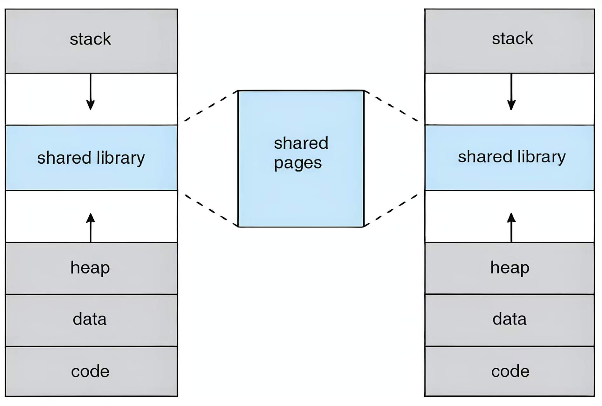
Demand Paging¶
Background
- 代码必须被写入主存才能运行，但是整个程序很少需要同时被使用，存在未使用的代码和未使用的数据
- 未使用的代码：错误处理代码、不常用的例程
- 未使用的数据：大型数据结构
- 需要执行部分加载程序的能力：程序不再受限于物理内存的限制，程序可以比物理内存更大
- Demand Paging：只有当需要的时候才将一页调入内存
- 优点：无不必要的 I/O，内存需求减少，支持更多应用
- 缺点：响应速度变慢
- 运行流程：当发生访问操作（读/写）
- 如果页面 invalid \(\Rightarrow\) 触发 segmentation fault \(\Rightarrow\) 终止操作
- 如果页面 valid 但不在内存中 \(\Rightarrow\) 触发缺页异常/缺页中断 (page fault) \(\Rightarrow\) 将其调入物理内存
调入方式
- 对于已交换出的页面，通过交换 (swapping) 换入
- 对于新页面，通过映射 (mapping) 分配
- swapper
- lazy-swapper：除非页面将被需要，否则绝不将其换入内存
- 优点：更省内存
- 处理页面的交换程序也被称为调页程序 pager
- pre-paging：在进程引用页面之前，预先调入该进程将需要的全部或部分页面
- 优点：可以减少执行期间的缺页异常数量，效率更高
- 缺点：如果预调页的页面未被使用，则会浪费 I/O 和内存资源；总的 I/O 次数可能会更高
- 最坏情况：pure demand paging（启动进程时内存中没有任何 frame）
- 硬件支持：带有有效/无效位的页表项、后备存储（通常是磁盘）、指令重启能力
Frames 分配
进程内存分配的两种主要方案：
-
平均分配
- e.g. 100 个页框和 5 个进程，为每个进程分配 20 个页框
- 保留一部分作为空闲页框缓冲池
-
按比例分配：根据进程的大小进行分配
内核内存分配
- 内核内存分配的处理方式与用户内存不同，通常是从空闲内存池中分配的
- 内核为不同大小的结构请求内存：尽量减少由于碎片造成的浪费
- 某些内核内存需要是物理连续的 e.g. 用于设备 I/O
性能¶
- 缺页率：\(0 \le p \le 1\)（如果 \(p = 0\)，则没有缺页；如果 \(p = 1\)，则每一次引用都会产生缺页）
- 有效访问时间：
EAT = (1-p) \(\times\) memory access + p \(\times\) (page fault overhead + swap page out + swap page in + instruction restart overhead)
Translate
(1 - p) \(\times\) 内存访问时间 + p \(\times\) ( 缺页中断开销 + 页面换出 + 页面换入 + 指令重启开销 )
- 优化：
- 方法 1：swap space
- 交换空间的 I/O 比文件系统 I/O 更快（以更大的块进行分配，所需的管理比文件系统少）
- 在进程加载时，将整个进程镜像从磁盘复制到交换空间，然后从交换空间进行页面的换入和换出
- 方法 2：从磁盘上的程序二进制文件请求分页，但在释放帧时直接丢弃而非换出（下次使用时再从磁盘重新加载）
- 以下情况仍需写入交换空间：
- 匿名内存：未与文件关联的页面（如栈和堆）
- 内存中已修改但尚未写回文件系统的页面
- 以下情况仍需写入交换空间：
copy-on-write¶
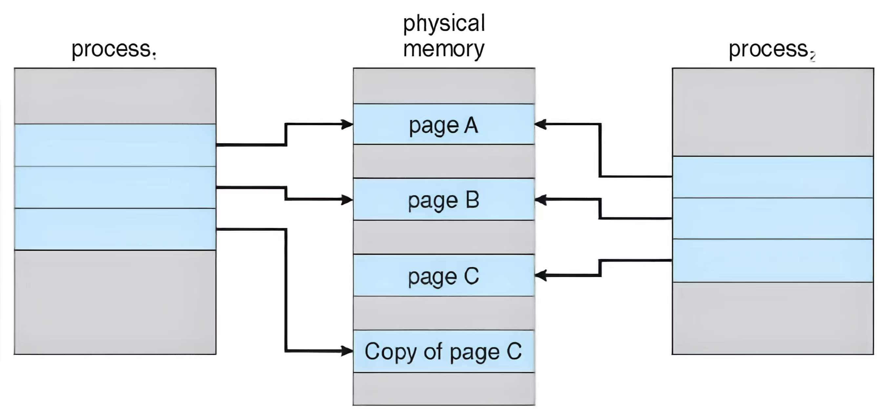
- COW：允许父进程和子进程在初始阶段共享内存中的相同页面
- 只要没有进程修改该页面，页面就会一直共享
- 只有当其中一个进程修改共享页面时，才会复制该页面
- 优点：进程创建更高效（在执行
fork期间无需复制父进程内存，之后仅复制发生更改的内存部分）
vfork
vfork 系统调用优化了子进程在 fork 后立即调用 exec 的情况
- 父进程被挂起，直到子进程退出或调用
exec - 子进程共享父进程的资源，包括堆和栈
- 子进程不能从函数返回或调用
exit，而应调用_exit
page fault¶
Page Fault 分类
-
主缺页中断 (Major)：页面被引用但不在内存中， 只能通过访问磁盘来满足 e.g. code
-
次缺页中断 (Minor)：映射不存在，但页面已在内存中 e.g. stack/heap、共享库、页面已被回收但尚未被完全释放
- 触发条件：用户空间程序访问了一个地址，且该地址对应的页面当前未调入物理内存
注意
只有 user space 才会产生 page fault，kernel space 不会产生 page fault，因为用户空间有 lazy allocation
- 发出 page fault 的硬件：MMU
- 通过查看页表项的 valid-invalid 位（present bit：操作系统来设置），判断该页是否被映射
- 如果 invalid，则触发 page fault
- 处理 page fault：操作系统（以 Linux 为例）
- 首先检查 VMA 以确定异常类型（使用红黑树组织 VMA 来提高查找的速度）
- 地址位于
vm_area之内：合法访问，继续处理 - 地址超出
vm_area范围：非法访问，报错并终止（segmentation fault）
- 地址位于
- 然后获取空闲的 physical frame 并映射
获取空闲页框
- 大多数操作系统维护着一个空闲页框链表 free-frame list
- 操作系统通常使用一种称为请求零填充 (zero-fill-on-demand) 的技术来分配空闲页框：即在分配页框之前，将其内容全部清零
- 当系统启动时，所有可用内存都会被放入空闲页框链表中
VMA
| C | |
|---|---|
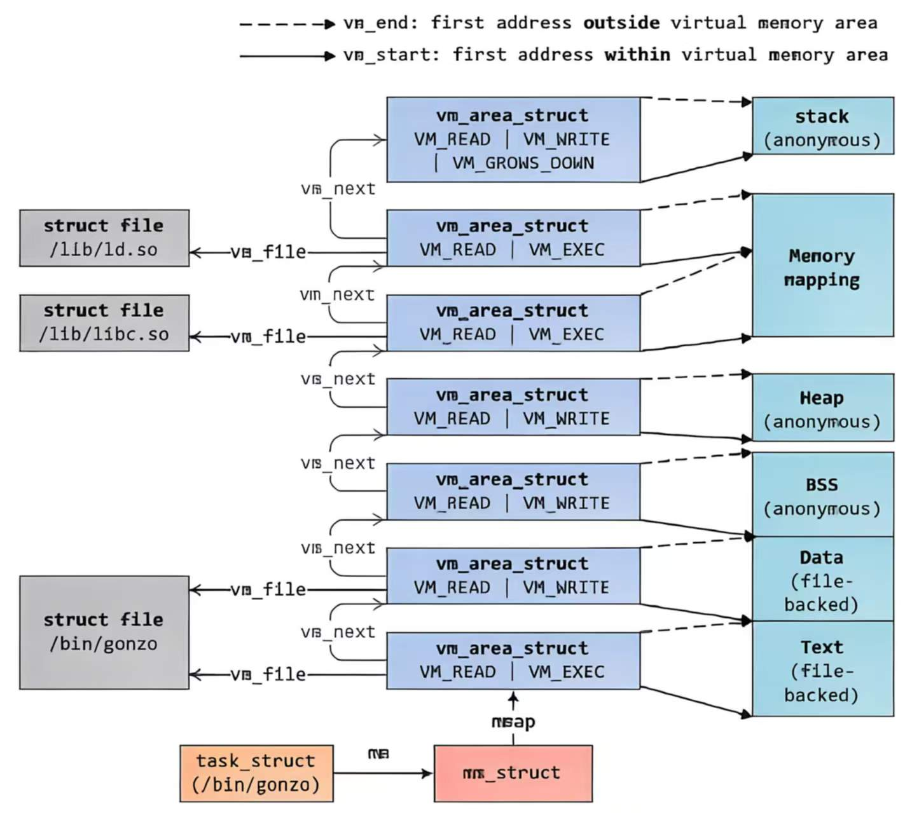
heap¶
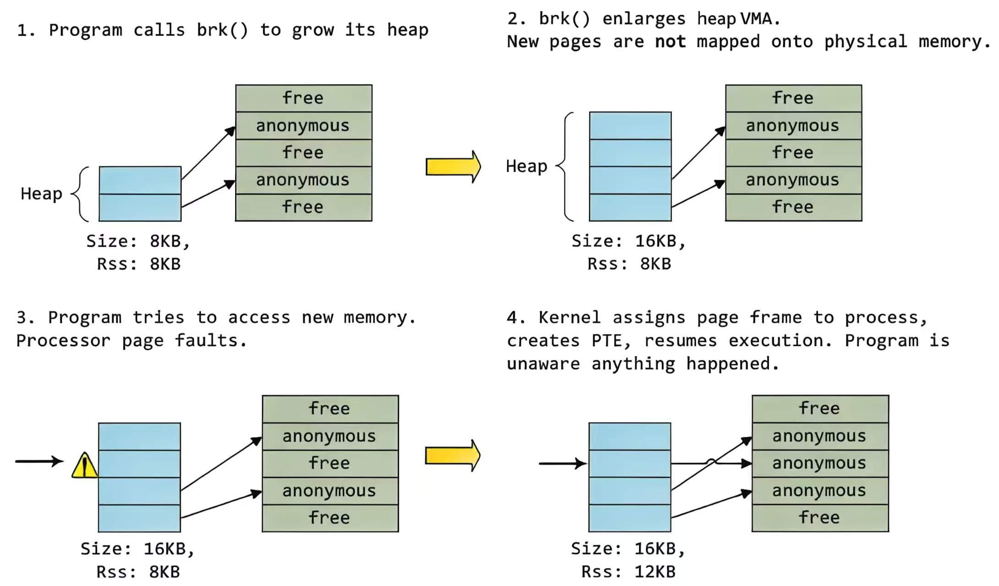
执行 malloc() 时
- 程序调用
brk()来扩展 heap brk()通过增加vm_end扩大了 heap 的 VMA，但是新页面尚未映射到物理内存上- 程序尝试访问新内存，处理器触发 Page Fault，并进入 kernel
- 内核为进程分配 Page Frame，创建页表项 (PTE)，并恢复程序执行（程序对这一切毫无察觉）
code¶
对比 heap
- heap 是匿名的，而 code 是非匿名的（有文件支持），因此 code 相对于 heap 的 page fault 解决，需要去硬盘上寻找支持的文件，并从硬盘读取到物理内存，而硬盘的读取速度比较慢，所以会被其他进程占用
- 下述步骤如果是 heap，则需要 1, 2, 3, 4, 9, 10
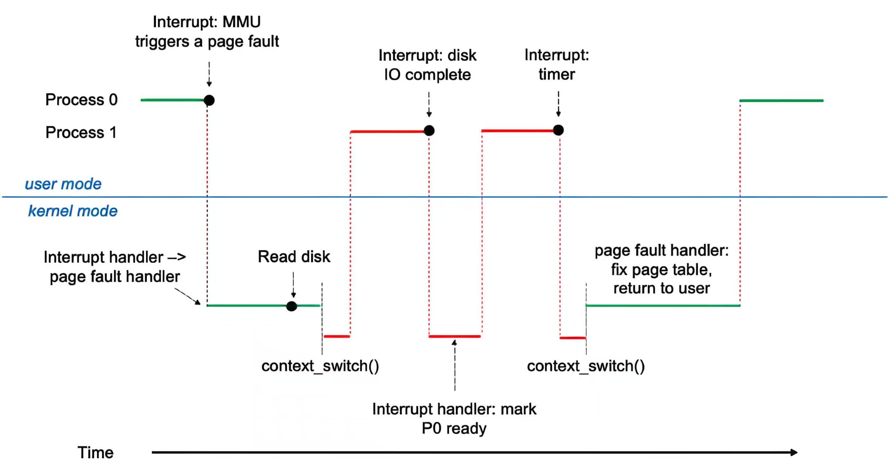
假设 Process 0 正在运行，触发了 page fault
- 陷入 (Trap) 到操作系统
- 保存用户寄存器和进程状态到内核栈的
pt_regs - 确定中断类型为缺页异常（检查页面引用是否合法）
- 查找空闲页框
- 确定页面在磁盘上的位置，并向空闲页框发起磁盘读取：
- 在设备队列中等待，直到读取请求获得服务
- 等待设备的寻道和/或延迟时间
- 开始将页面传输到空闲页框
- 在等待期间，将 CPU 分配给 Process 1
- 接收到来自磁盘 I/O 子系统的中断（I/O 已完成）：
- 确定中断来自磁盘
- 将发生缺页异常的进程标记为 ready 状态
- 等待 CPU 再次分配给 Process 0
- 保存 Process 1 的寄存器和进程状态
- 上下文切换回发生缺页异常的 Process 0
- 修正页表，映射新的页框
- 返回用户态：恢复用户寄存器、进程状态和新页表，然后重启被中断的指令
页表切换
- 一个进程对应一个页表
- 进行系统调用的时候，由用户空间跳到内核空间，页表切换为内核的页表
页面替换¶
页面替换类型
- 全局置换 (Global replacement)：进程从所有页框的集合中选择一个置换页框（一个进程可以从另一个进程那里夺取页框）
- 缺点：进程的执行时间可能会有很大波动（取决于其他进程）
- 优点：吞吐量更高，更为常见
- 局部置换 (Local replacement)：每个进程仅从其自身分配的页框集合中进行选择
- 优点：每个进程的性能更加稳定
- 缺点：可能导致内存利用率不足
- 页面替换算法：FIFO, optimal, LRU, LFU, MFU...
- 算法评估：在特定的内存引用序列上运行该算法，计算该引用串上的缺页中断次数
info
下述例子均为 7, 0, 1, 2, 0, 3, 0, 4, 2, 3, 0, 3, 0, 3, 2, 1, 2, 0, 1, 7, 0, 1
FIFO¶
-
FIFO：先进先出
-
实例：一共 15 次 page fault（3 个 frames）
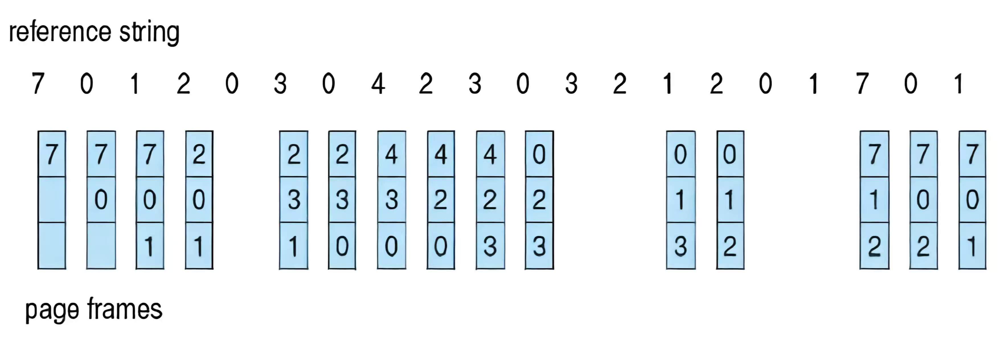
- Belady's Anomaly：对于 FIFO，增加更多的页框反而可能导致更多的缺页中断
Example
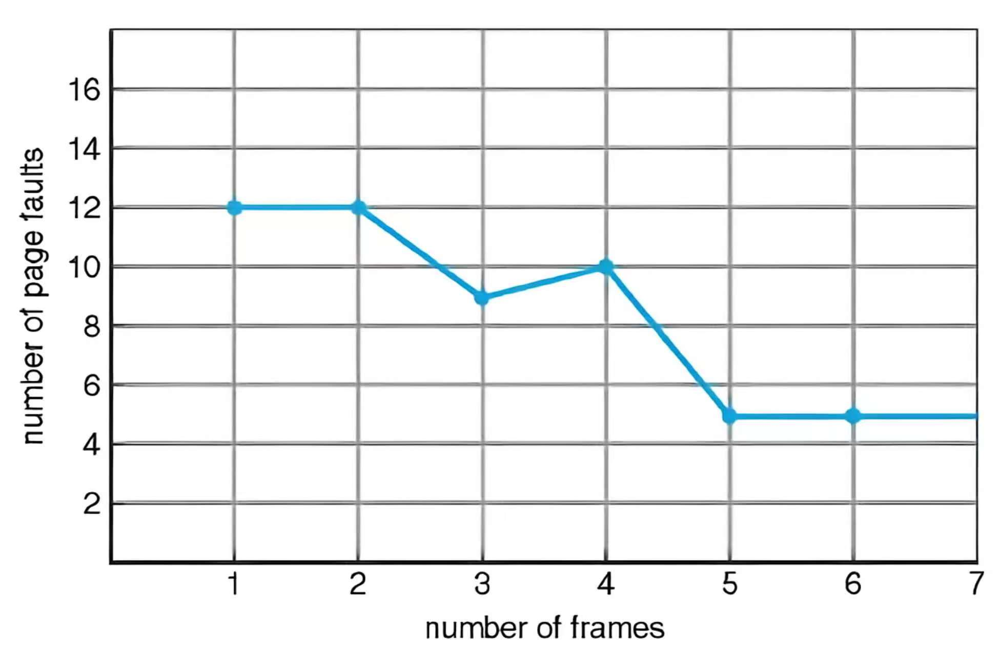
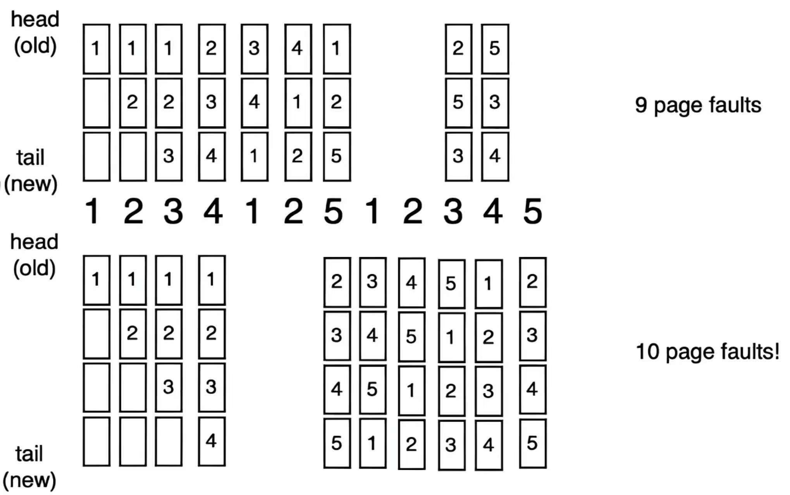
Optimal¶
- Optimal：替换未来最长时间不使用的页面
- 缺点：无法预知未来（不可能实现）
- 该算法主要用于衡量其他算法的性能优劣
- 实例：9 个 page fault
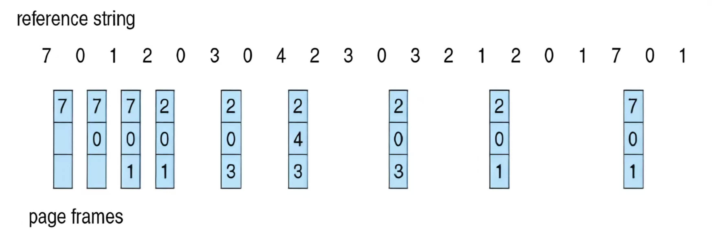
LRU¶
- LRU：最近最少使用
LRU 和 OPT 算法不会出现 Belady's Anomaly
- 实例：12 个 page fault
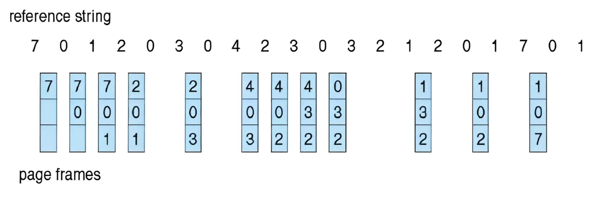
- 实现：
- counter-based：
- 每一个页表项带有一个 counter
- 每当页面被引用时，将 clock 的值复制到该 counter 中
- 当需要置换页面时，搜索 counter 值最小的页面（可以用最小堆来实现）
-
stack-based：
- 维护一个页码栈（采用双向链表结构）
- 当一个页面被引用时，将其移动到栈顶
- 每次更新的开销更高，但置换时无需进行搜索
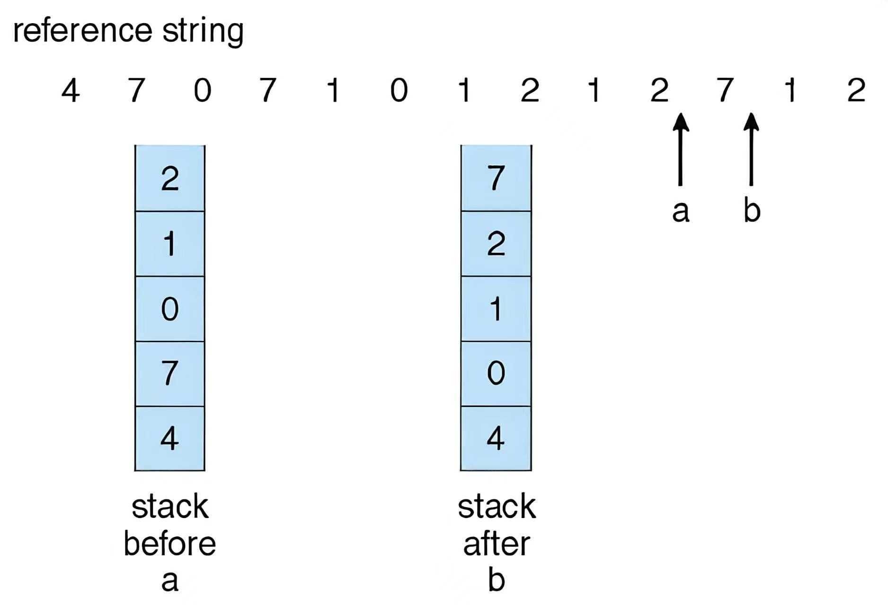
基于计数器和基于栈的 LRU 实现具有较高的性能开销
- LRU 近似算法（最常用）
- 硬件提供了一个引用位 (Reference bit)
- 为每个页面关联一个引用位，初始设置为 0；当页面被引用时，将该位设置为 1（由硬件完成）
- 置换任何引用位为 0 的页面（如果存在）
Warning
该算法无法得知这些页面的引用先后顺序
- 附加引用位算法：假设为每个页面分配一个 8 位的字节
- 在每个时间间隔内，将位右移 1 位，如果页面被使用过，则将最高位置为 1，然后舍弃低位
- e.g. 11000100 vs 01110111，前者最近被使用
- 二次机会算法
- 待置换的页面
- 引用位 = 0 -> 置换该页面
- 引用位 = 1 -> 引用位清零，将页面留在内存中
- 按照相同规则置换下一个页面
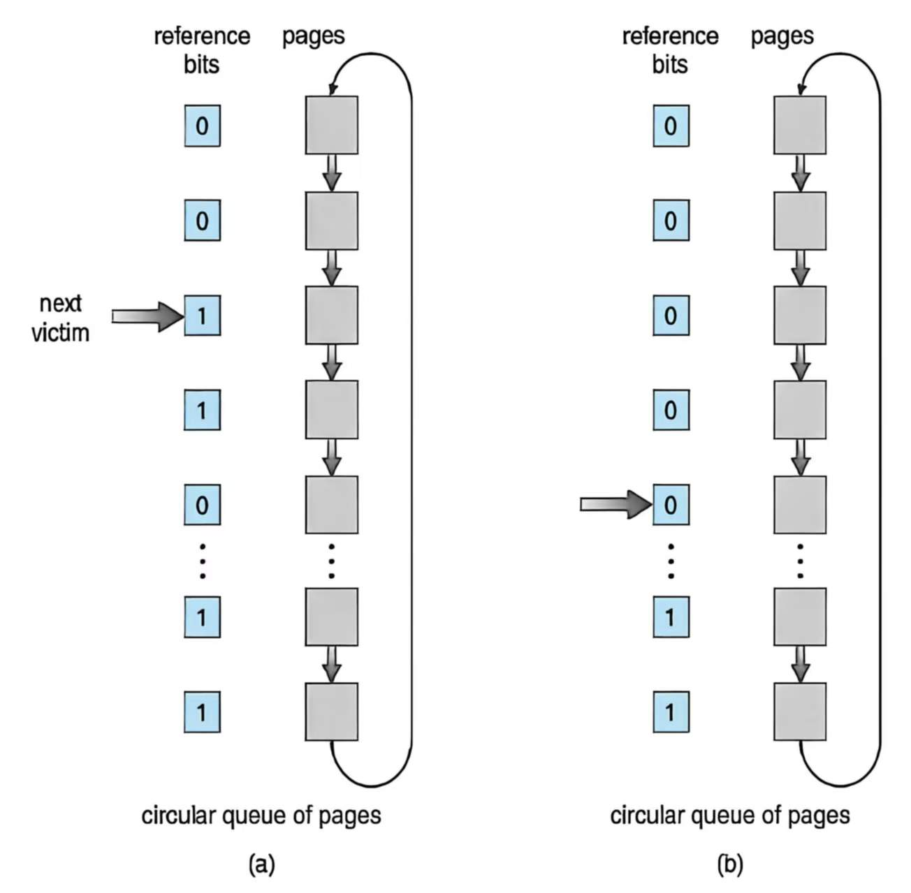
- 增强型二次机会算法：通过结合使用引用位和修改位来改进算法
- 采用有序对（引用位，修改位）
- (0, 0)：最近未被使用也未被修改 -> 最佳置换页面
Counting-based¶
- counter 记录对每个页面的引用次数
- 最不经常使用算法 (LFU)：置换 counter 值最小的页面（一个页面可能在进程初始化阶段被大量使用，随后便不再使用）
- 最经常使用算法 (MFU)：置换 counter 值最大的页面（值最小的页面可能刚被调入内存，尚未被使用）
- LFU 和 MFU 并不常用
应用程序与页面替换
- 内存密集型应用程序可能会导致双重缓冲（一种内存浪费）：
- 操作系统在内存中保留一份页面副本作为 I/O 缓冲区
- 应用程序在内存中保留该页面用于自身工作
- 原始磁盘模式 (Raw disk mode)：授予操作系统对磁盘的直接访问权限，从而不干扰应用程序
页面缓冲算法¶
- 维持一个 frame pool：
- 当需要时立即有可用帧，无需在发生缺页时才去找
- 将页面读入空闲帧，无需等待“牺牲页”被写回磁盘：尽可能快地重启进程
- 在方便时再驱逐牺牲页
- 维护已修改页面的列表：
- 当磁盘空闲时，将这些页面写入磁盘并设置为“非脏”
- 这样该页面就可以在无需写入后端存储的情况下直接被置换
- 帧内容缓存：保持空闲帧内容完好并记录其中的内容（如果页面在被重用前再次被引用，则无需再次从磁盘加载内容）
页面回收
页面回收：一种实现全局页面置换策略的方法，确保始终有足够的空闲内存
- 所有的内存请求都通过空闲页框列表来满足
- 在列表降至特定阈值以下时触发页面置换（杀死某些进程：根据 OOM 分数进行选择）
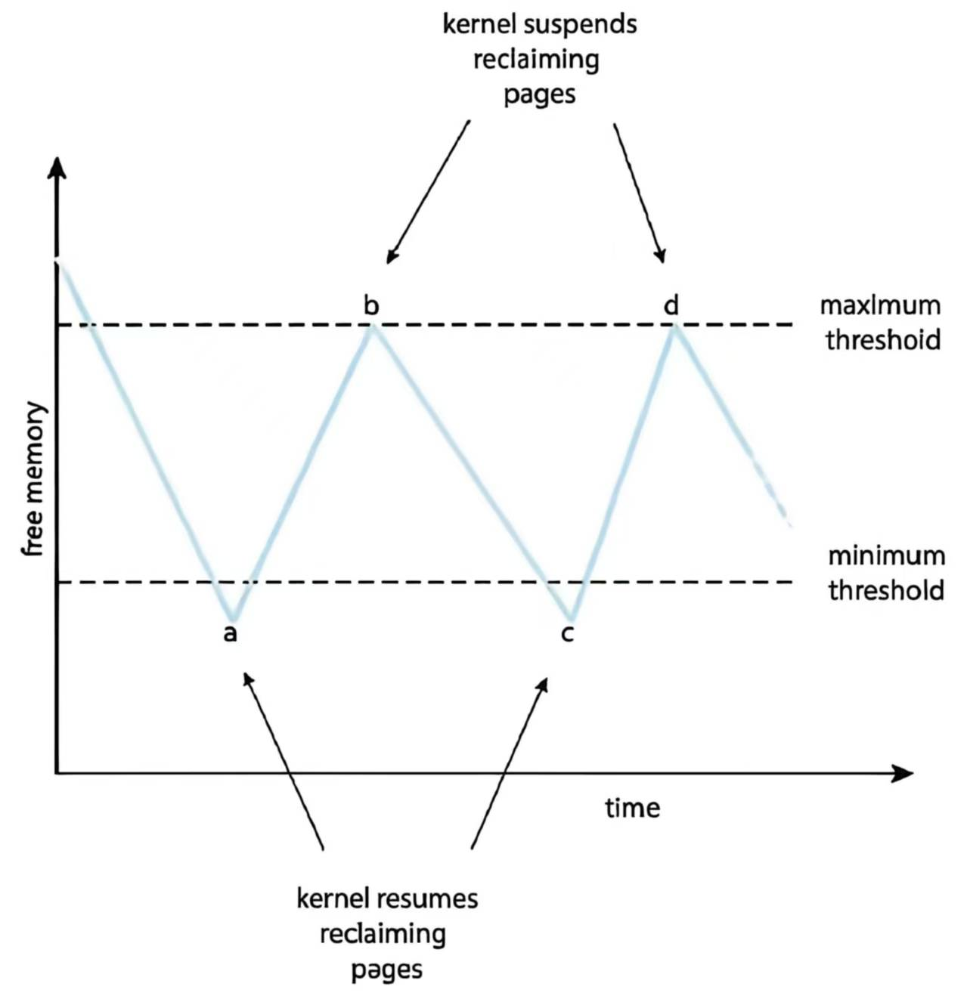
NUMA 非一致性内存访问
- NUMA：访问内存的速度各不相同
- 不同 CPU 距离不同的内存的距离不同，因此访问时间也不同
抖动¶
- Thrashing：进程忙于频繁地换入和换出页面
- 如果一个进程没有足够的 frame，其缺页率可能会很高
- 发生缺页中断以获取页面，并置换掉某些现有的页框
- 但很快又需要被置换掉的那个页框（刚换出就换入）
- 导致低 CPU 利用率 \(\Rightarrow\) 内核认为需要更多的进程以最大化 CPU 利用率 \(\Rightarrow\) 系统中加入更多进程
CPU 利用率
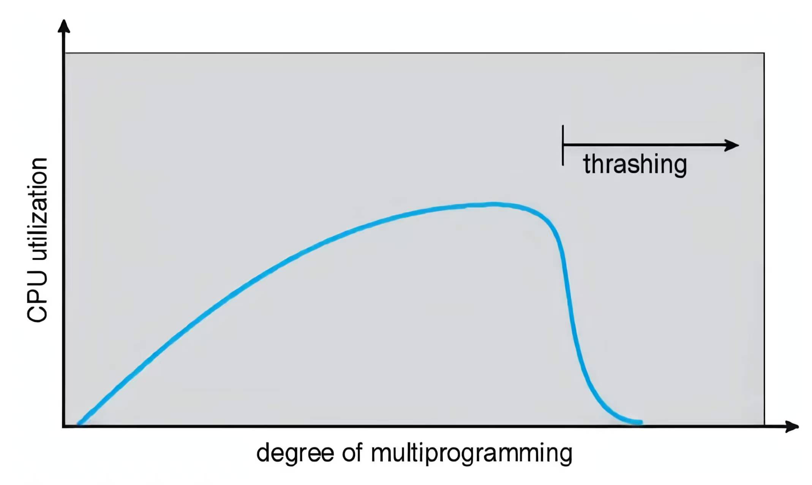
-
产生原因：内存总大小 < 局部区域的总大小，导致有 frame 频繁的换入和换出
-
解决方法：
- 局部页面置换：从同一个进程中选择要换出的页面，一个进程开始抖动不会导致其他进程也发生抖动
- 工作集模型
- 缺页频率 PFF（比工作集策略更直接的方法）：建立可接受的缺页率
- 如果缺页率过低，进程失去页框
- 如果缺页率过高，进程获得页框
- 如果没有空闲页框可用，则需要换出某个进程
工作集模型
- 工作集窗口 \(\Delta\)： 一个固定数量的页面引用序列
- 进程 \(p_i\) 的工作集 \(WSS_i\)： 在最近的 \(\Delta\) 窗口内引用的页面总数（随时间变化）
- 总工作集大小：\(D = \sum WSS_i\)
- 如果 \(D > m\)（总内存页框数） \(\Rightarrow\) 存在抖动的可能性
- 避免抖动：如果 \(D > m\)，则挂起或换出某些进程，将其释放的页框分给正在抖动的进程
Example
\(\Delta\) = 10
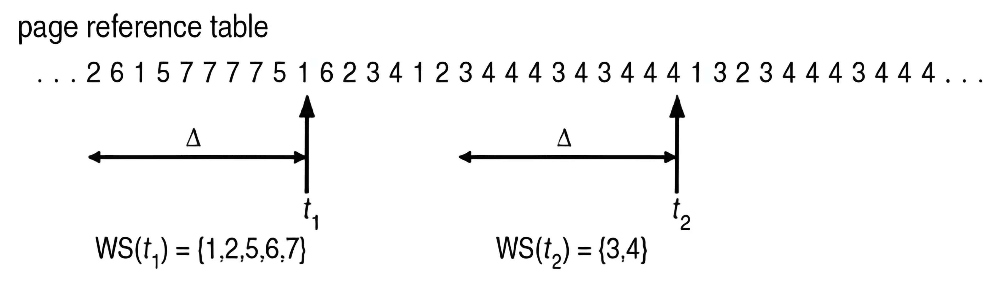
其他概念¶
- Prepaging：在页面被引用之前，预先调入进程需要的所有或部分页面
- 目的：为了减少进程启动时发生的大量缺页中断
- 缺点：但如果预调页的页面未被使用，则会浪费 I/O 和内存
- Page Size
- 小页面：
- 减少内部碎片：页面越小，浪费的内存就越少
- 分辨率更高：更精确地只将部分数据加载进内存，而不必带入大量无关数据
- 局部性更好：只保留程序当前最活跃的代码和数据
- 大页面：
- 减小页表大小：页表项数越少，页表占用的内存越少
- 降低 I/O 开销：提高单次传输的吞吐量
- 减少缺页中断次数
- 提升 TLB 大小和有效性：同样的 TLB 条目能覆盖更大的地址范围，CPU 更有可能在 TLB 中直接找到物理地址，减少了访问内存中多级页表的次数
- TLB Reach：指从 TLB 可访问的内存总量
- TLB 覆盖范围 = TLB 大小 \(\times\) 页面大小
- 理想情况下，每个进程的工作集都存储在 TLB 中，否则会出现大量的 TLB 未命中
- 增加页面大小有助于减轻 TLB 压力（可能会增加碎片）
- 程序结构：影响缺页中断
| C | |
|---|---|
- 假设
- 页面大小为 512B
- 每一行存储在一个页面中
- 假设系统有 127 个物理页框
- 程序 1：128 \(\times\) 128 个缺页中断
- 程序 2：128 个缺页中断（每一行一次）
- I/O interlock：把页面锁定在内存中，保证不会被换出去
e.g. 用于从设备复制文件的页面必须被锁定，以防被页面置换算法选中并移出内存
实例¶
Windows XP¶
- 使用带有群集的请求调页：群集会将发生缺页中断页面周围的页面调入（局部性）
- 为进程分配工作集的最小值和最大值
- wsmin：保证进程拥有的最小页面数量
- wsmax：一个进程最多可以被分配到其 wsmax 所规定的页面数量
- 当系统中空闲内存量低于阈值时，自动进行工作集修整以恢复空闲内存量，从页面数量超过 wsmin 的进程中移除页面
Linux¶
mm_struct
pgd：页表mmap：vma
Tip
mm_struct：一个进程对应一个task_struct：一个线程对应一个
- Buddy System：内存以 2 的幂大小为单位进行分配，将单位拆分为两个 Buddy，直到获得大小合适的块
- 优点：可以快速将未使用的块合并为更大的块
- 缺点：内部碎片
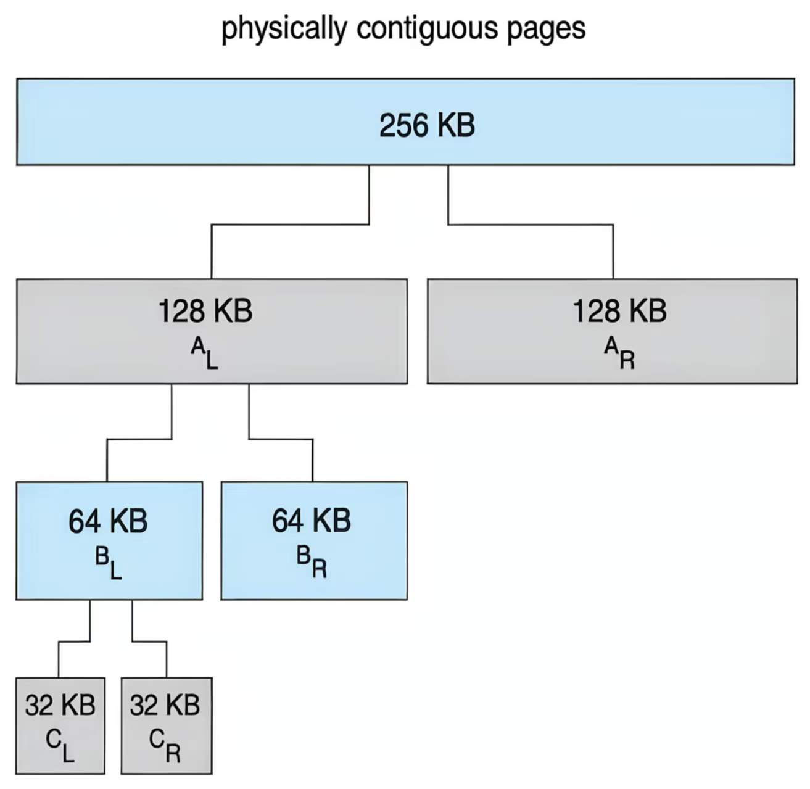
- Slab 分配器是对象缓存
- Slab 分配器中的缓存由一个或多个 slab 组成
- 一个 slab 包含一个或多个页面，并被划分为大小相等的对象
- 内核为每种独特的内核数据结构使用一个缓存
- 创建缓存时，分配一个 slab，并将其划分为空闲对象
- 数据结构的对象从 slab 中的空闲对象中分配
- 如果一个 slab 已满，则下一个对象将来自空闲/新的 slab
- 优点：
- 无碎片且内存分配速度快
- 某些对象字段可能是可重用的，无需再次初始化
- 三种状态：full、empty、partial
Example
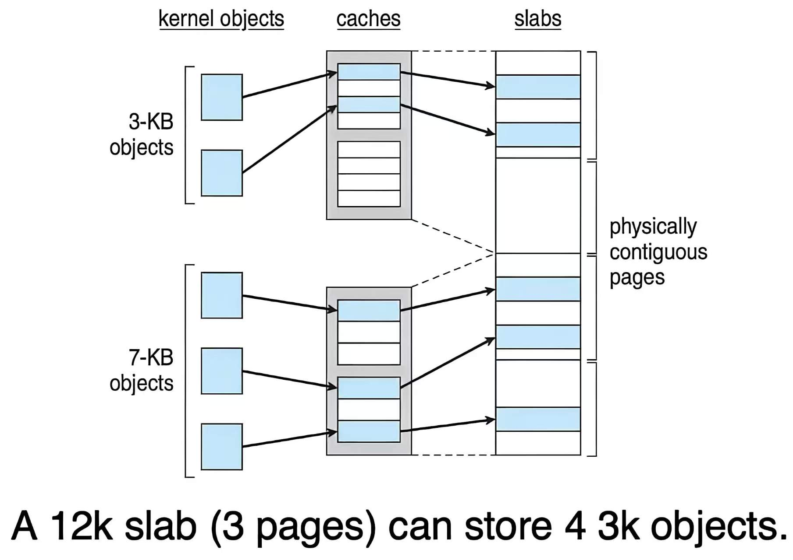